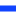

<!doctype html>
<html lang="en">
    <head>
        <meta charset="utf-8">
        <meta http-equiv="X-UA-Compatible" content="IE=edge">
        <meta name="viewport" content="initial-scale=1,user-scalable=no,maximum-scale=1,width=device-width">
        <meta name="mobile-web-app-capable" content="yes">
        <meta name="apple-mobile-web-app-capable" content="yes">
        <link rel="stylesheet" href="css/leaflet.css" />
        <link rel="stylesheet" type="text/css" href="css/qgis2web.css">
        <link rel="stylesheet" href="css/MarkerCluster.css" />
        <link rel="stylesheet" href="css/MarkerCluster.Default.css" />
        <script src="js/leaflet.js"></script>
        <script src="js/leaflet-heat.js"></script>
        <script src="js/leaflet.rotatedMarker.js"></script>
        <script src="js/OSMBuildings-Leaflet.js"></script>
        <script src="js/leaflet-hash.js"></script>
        <script src="js/Autolinker.min.js"></script>
        <script src="js/leaflet.markercluster.js"></script>
        <style>
        html, body, #map {
            width: 100%;
            height: 100%;
            padding: 0;
            margin: 0;
        }
        </style>
        <title></title>
    </head>
    <body>
        <div id="map">
        </div>
        <script src="data/json_MiscOysterInstallations0.js"></script>
        <script src="data/json_LivingBreakwaters1.js"></script>
        <script>
        L.ImageOverlay.include({
            getBounds: function () {
                return this._bounds;
            }
        });
        var map = L.map('map', {
            zoomControl:true, maxZoom:28, minZoom:1
        }).fitBounds([[40.53033343,-74.5125272],[41.07908737,-73.48976]]);
        var hash = new L.Hash(map);
        map.attributionControl.addAttribution('<a href="https://github.com/tomchadwin/qgis2web" target="_blank">qgis2web</a>');
        var feature_group = new L.featureGroup([]);
        var bounds_group = new L.featureGroup([]);
        var raster_group = new L.LayerGroup([]);
        var basemap0 = L.tileLayer('http://{s}.www.toolserver.org/tiles/bw-mapnik/{z}/{x}/{y}.png', {
            attribution: '&copy; <a href="http://openstreetmap.org">OpenStreetMap</a> contributors, <a href="http://creativecommons.org/licenses/by-sa/2.0/">CC-BY-SA</a>',
            maxZoom: 28
        });
        basemap0.addTo(map);
        function setBounds() {
        }
        function geoJson2heat(geojson, weight) {
          return geojson.features.map(function(feature) {
            return [
              feature.geometry.coordinates[1],
              feature.geometry.coordinates[0],
              feature.properties[weight]
            ];
          });
        }
        function pop_MiscOysterInstallations0(feature, layer) {
            var popupContent = '<table><tr><td colspan="2">' + (feature.properties['Name'] !== null ? Autolinker.link(String(feature.properties['Name'])) : '') + '</td></tr><tr><th scope="row">URL</th><td>' + (feature.properties['URL'] !== null ? Autolinker.link(String(feature.properties['URL'])) : '') + '</td></tr></table>';
            layer.bindPopup(popupContent);
        }

        map.createPane('pane_MiscOysterInstallations0');
        map.getPane('pane_MiscOysterInstallations0').style.zIndex = 601;
        function doStyleMiscOysterInstallations0() {
            return {
                pane: 'pane_MiscOysterInstallations0',
                radius: 4.0,
                fillColor: '#e710f6',
                color: '#000000',
                weight: 0.0,
                opacity: 1.0,
                dashArray: '',
                lineCap: 'butt',
                lineJoin: 'miter',
                fillOpacity: 1.0
            }
        }
        function doPointToLayerMiscOysterInstallations0(feature, latlng) {
            return L.circleMarker(latlng, doStyleMiscOysterInstallations0())
        }
        var json_MiscOysterInstallations0JSON = new L.geoJson(json_MiscOysterInstallations0, {
            pane: 'pane_MiscOysterInstallations0',
            onEachFeature: pop_MiscOysterInstallations0,
            pointToLayer: doPointToLayerMiscOysterInstallations0
            });
        bounds_group.addLayer(json_MiscOysterInstallations0JSON);
        feature_group.addLayer(json_MiscOysterInstallations0JSON);
        function pop_LivingBreakwaters1(feature, layer) {
            var popupContent = '<table><tr><td colspan="2">' + (feature.properties['Name'] !== null ? Autolinker.link(String(feature.properties['Name'])) : '') + '</td></tr><tr><th scope="row">URL</th><td>' + (feature.properties['URL'] !== null ? Autolinker.link(String(feature.properties['URL'])) : '') + '</td></tr></table>';
            layer.bindPopup(popupContent);
        }

        function doStyleLivingBreakwaters1(feature) {
            return {
                weight: 4.24,
                color: '#1144ff',
                dashArray: '',
                lineCap: 'square',
                lineJoin: 'bevel',
                opacity: 1.0
            };
        }
        map.createPane('pane_LivingBreakwaters1');
        map.getPane('pane_LivingBreakwaters1').style.zIndex = 602;
        var json_LivingBreakwaters1JSON = new L.geoJson(json_LivingBreakwaters1, {
            pane: 'pane_LivingBreakwaters1',
            onEachFeature: pop_LivingBreakwaters1,
            style: doStyleLivingBreakwaters1
        });
        bounds_group.addLayer(json_LivingBreakwaters1JSON);
        feature_group.addLayer(json_LivingBreakwaters1JSON);
        raster_group.addTo(map);
        feature_group.addTo(map);
        var baseMaps = {'OSM B&W': basemap0};
        L.control.layers(baseMaps,{' Living Breakwaters': json_LivingBreakwaters1JSON,' Misc Oyster Installations': json_MiscOysterInstallations0JSON,},{collapsed:false}).addTo(map);
        setBounds();
        </script>
    </body>
</html>
